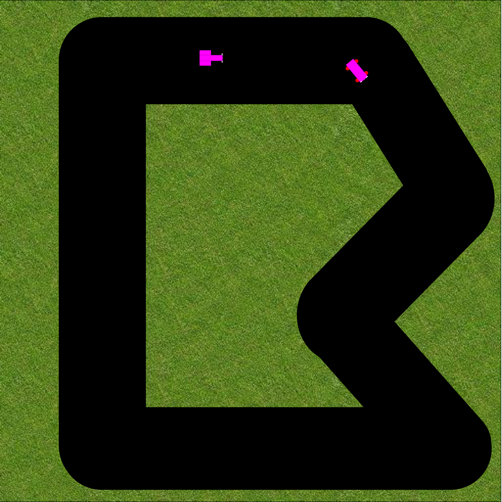

Ziel dieser Übung ist es, ein Car-Racing Game mit Canvas zu entwickeln.
Die wesentlichen Code-Fragmente sind bereits vorgegeben.
Nutzen Sie die .\Vorlage im entsprechenden Ordner.
Die Vorlage beinhaltet zwei HTML-Files:
Im Folder "assets" sind die notwendigen Bilder vorhanden.
Die zu ergänzenden Code-Stellen sind mit TODO's markiert.
Für diese Aufgabe benötigen Sie Car.html und car.js
Ihre Aufgabe ist es, das Aussehen der beiden Autos zu implementieren.
Implementieren Sie dafür die drawCar() Methode in den Klassen Car1 und Car2.
Sie können im Car.html ihre Autos "bestaunen".
Playfield.js beinhaltet den Aufbau und die Logik vom Spielfeld.
Versuchen Sie die beiden Hintergründe assets/Grass.jpg und assets/Racing01.png zu laden und auf dem Spielfeld darzustellen.
Die Spieler werden beim Initialisieren des Spielfelds erstellt. Die Autos der Spieler liegen im Array "cars".
Zeichnen Sie die Autos innerhalb von der drawField() Methode. Beachten Sie, dass die Koordinaten sowie den Winkel im Auto gespeichert sind.
Stellen Sie sicher, dass der Timer korrekt funktioniert.
Bei jedem Paint soll zuerst die Geschwindigkeit und Winkel berechnet werden (Tipp: handleKeys()) und anschliessend soll das Auto an die neue Position verschoben werden (Tipp: move()).
Das Auto soll gestoppt werden, falls dieses die Schwarze Fläche verlässt.
Die Kollision soll an der neuen Position überprüft werden.
Nutzen Sie dafür die handleFieldLimit() Methode.
Vergleichen Sie Ihre Lösung mit der abgegeben Lösung.
Analysieren Sie wie das Key-Handling funktioniert.
Welche Konzepte / Ideen von der Vorlesung wurden angewendet?
In der Lösung werden je nach Geschwindigkeit die Rück- oder Front-Lichter dargestellt. Versuchen Sie diese Feature nachzubauen.
Ändern Sie die Racing-Strecke von Racing01.png nach Racing02.svg. Sehen Sie einen Unterschied?
Bei der SVG-Variante sind die Kanten viel schöner.
Definieren Sie andere Auto-Typen.
Versuchen Sie den Code zu optimieren oder bringen Sie eigene Ideen ein.
Versuchen Sie die Ihre Lösung sofern möglich nach SVG zu portieren. Tipp: Nutzen Sie eine Library.
Vergleichen Sie Ihre Lösung mit der mögliche Lösung.